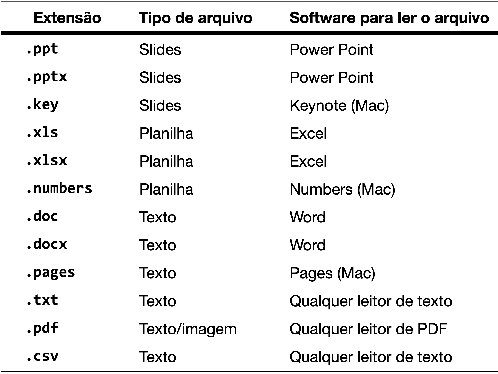
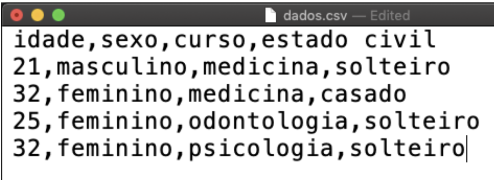
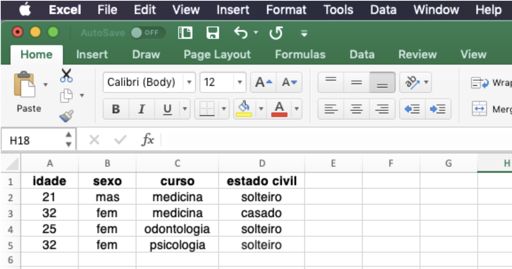
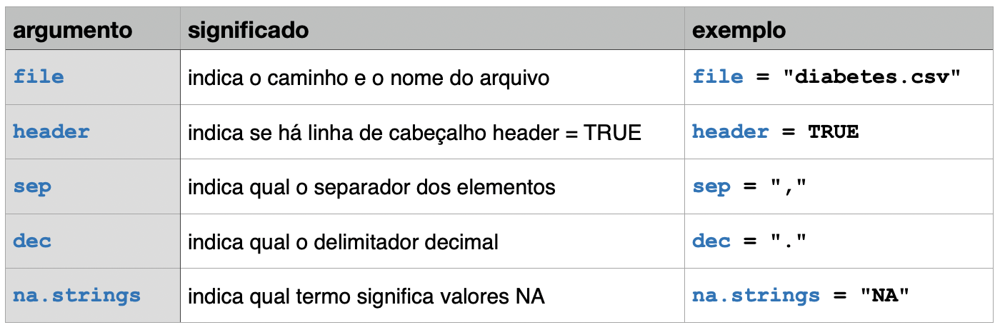

11 Lendo dados
Neste capítulo, exploraremos como ler dados no R a partir de diferentes formatos de arquivos. A capacidade de importar dados corretamente é crucial para qualquer análise de dados, pois impacta diretamente a qualidade e a precisão dos resultados. Vamos começar com uma visão geral dos diferentes formatos de arquivos de dados e, em seguida, aprenderemos a ler esses dados utilizando funções base do R e funções do pacote readr do tidyverse. Finalmente, veremos como importar dados de outros formatos comuns, como arquivos Excel, JSON e XML.
Até agora a maioria dos exemplos usados foram de bancos de dados do próprio R e, portanto, não foi necessário ler ou carregar nenhum banco de dados. Entretanto, ler dados externos é uma das primeiras etapas de um processo de análise de dados. Com o R podemos ler dados em diversos formatos.
11.1 Formatos de arquivos de dados.
Vamos primeiro entender esses diferentes formatos de arquivos de dados. Cada documento em digital possui uma estrutura particular. por exemplos, aquivos .doc ou .docx do Word possuem uma estrutura própria da Microsoft, que o aplicativo Word compreende e, portanto, consegue abrir. Arquivos do tipo PDF (.pdf) possuem uma outra estrutura e, portanto, necessitam de softwares que saibam ler essa estrutura para poderem serem abertos.
Existem diversos formatos de arquivos para armazenar dados, cada um apropriado para ser lido por determinados aplicativos. As letras finais em cada arquivo, depois do ponto final (extensão), indicam o tipo de arquivo. Vejamos alguns tipos comuns de arquivos
Alguns formatos de arquivos dependem de um software específico para sua leitura. Outros formatos são menos específicos, podendo ser lidos por um grande número de softwares, como é o caso dos arquivos .txt e dos arquivos .pdf. Esses formatos são mais universais, sendo padrões comuns para comunicação de informações. Dados de pesquisa, em formato de tabelas como mostrado, são usualmente armazenados em arquivos próprios para essa finalidade. Um formato comum é o usado por softwares de planilhas eletrônicas como o Excel da Microsoft. Existem inúmeros softwares desse tipo e cada um utiliza um formato específico, o que é justamente a desvantagem desse formato. o Excel usa arquivos que terminam com a extensão .xls ou .xlsx, o software de planilhas da Apple usa arquivos que terminam com a extensão .numbers, etc. O problema é que cada arquivo desse só pode ser lido pelo próprio software que criou o arquivo.
Um dos formatos mais usuais para arquivar dados é o .csv, que em inglês significa “comma-separated values”, ou seja “dados separados por vírgulas” (Shafranovich 2005; Mitlöhner et al. 2016). Esse é um formato comum de arquivo de dados suportado por inúmeros softwares em todas as plataformas de computador (Mac, Windows, Linux etc), sendo por isso mesmo um dos tipos de arquivos mais usados para transferência de dados entre programas. Todo software de planilhas, tal como o Excel (PC ou Mac), Numbers (Mac), Libre Office etc. são capazes de ler e salvar os dados nesse formato.
11.2 Os arquivos .csv
A extensão .csv no final do nome de um arquivo indica que esse é um arquivo de dados no formato separado por vírgulas. A estrutura desse arquivo é bastante simples: existem várias linhas, cada linha com vários dados, separados por vírgulas.
Existem, entretanto variações nesse formato, por exemplo, no Brasil as casas decimais são separadas por vírgulas, nesse caso o delimitador dos valores não poderia ser a vírgula e é usado então o ponto e vírgula. Portanto, ao ler dados no formato .csv é sempre importante informar se os dados são separados por , ou ; e se o separador do decimal é a virgula, ou o ponto final. Caso contrário a leitura dos dados poderá ser corrompida. Um outro detalhe é que, em alguns arquivos, os valores faltantes são indicados por NA, em outros por um espaço em branco, ou por outro símbolo. É importante informar ao R como esses valores faltantes estão indicados no arquivo.
Um arquivo de dados do tipo .csv pode ser visualizado através de qualquer leitor simples de texto, tal como o TextEdit do Mac ou o o Notepad no Windows. Abaixo podemos ver como um conjunto de dados simples está gravada num arquivo separado por vírgulas. Observe que a primeira linha representa o nome das variáveis.

Os arquivos .csv podem ser lidos por softwares de planilhas eletrônicas, tal como o Excel ou Numbers. A figura abaixo mostra como o Excel interpreta a primeira linha como sendo a dos nomes das variáveis e já separa as variáveis nas colunas e os dados de cada participante nas linhas.

Existem diversos modos de carregar dados no R. Podemos fazer isso usando os menus do RStudio ou através das funções do R base (read.csv, read.csv2, read.delim, etc.) ou com as funções de leitura mais modernas do pacote readr (read_csv, read_csv2, etc.), que faz parte do tidyverse. Vamos ver como fazer isso de cada uma dessas formas.
11.4 Lendo dados com read.csv()
Caso o arquivo esteja no formato .csv com as seus valores separados por vírgula (que é o padrão usual), podemos usar a função read.csv( ) para carregar os dados, bastando indicar o nome do arquivo a ser lido. Se por acaso o arquivo se chama diabetes.csv, então o comando de leitura será:
read.csv(file = "diabetes.csv").
O primeiro argumento da função read.csv é o mais importante, é o caminho e o nome do arquivo a ser lido. Um detalhe importante é saber qual é o working directory que você está usando. Lembre-se que a melhor forma de trabalhar no RStudio é criando um projeto, que define o diretório de trabalho como a pasta do projeto. Já detalhamos isso em capítulos anteriores sobre Working Directories e Projetos do RStudio (Chapter 5).
O código acima ira funcionar se o arquivo chamado diabetes.csv estiver dentro do atual diretório de trabalho do R.
Se o arquivo estiver numa pasta chamada dataset, dentro do diretório de trabalho, então teremos de incluir esse caminho no nome, tudo dentro das aspas, como abaixo:
read.csv(file = "dataset/diabetes.csv").
Ou seja, com os dados no formato csv, a leitura dos dados é extremamente fácil com o comando acima. Esse comando lê o arquivo chamado diabetes.csv, que está na pasta dataset, dentro do diretório de trabalho atual.
Mas falta ainda um detalhe: é preciso colocar os dados lidos numa variável. O comando correto deve ser parecido com a linha abaixo.
mydata <- read.csv(file = "dataset/diabetes.csv")
No caso acima a variável, ou melhor, o objeto, que vai receber os dados foi chamado de mydata e os dados estão sendo lidos de um arquivo chamado diabetes.csv. Dessa forma, os dados são lidos e colocados na variável mydata. Você verá que, ao ler um arquivo de dados dessa forma, o objeto mydata será um data frame, com linhas representando cada paciente (observação) e colunas representando as variáveis da pesquisa.
Caso o arquivo contenha dados separados por ponto e vírgula, a função a ser usada é read.csv2():
mydata <- read.csv2(file = "dataset/diabetes.csv")
Ambas as funções read.csv() e read.csv2() são derivadas da função read.table(). Essas funções podem receber diversos argumentos para otimizar a leitura dos dados.

O comando acima poderia ser reescrito com todos esses argumentos de forma explícita como abaixo:
diabetes <- read.table(file ="dataset/diabetes.csv",
header = TRUE,
sep = ",",
dec = ".",
na.strings = "NA")O código acima faz o seguinte:
- Lê um arquivo denominado
diabetes.csv; que está na pastadataset
- No qual há um cabeçalho com os nomes da variáveis:
header = TRUE
- Cujos dados estão separados por vírgula:
sep = ","
- Cujos decimais são identificados pelo ponto final :
dec = "."
- E os valores faltantes estão intensificados no arquivo pelas letras NA:
na.strings = "NA".
- Finalmente, esse data frame é armazenado num objeto chamado
diabetes.
11.5 Lendo arquivos na internet
Lembre-se que o principal argumento da função read.csv() é o caminho do arquivo. Podemos também usar um caminho de um arquivo na internet. O arquivo diabetes.csv pode ser obtido na internet no site do departamento de estatística da Universidade de Vanderbilt.
A página com os bancos de dados pode ser acessada no seguinte link: https://hbiostat.org/data
É possível então navegar por essa página e fazer o download manualmente do dataset diabetes.csv.
Mas podemos automatizar esse processo inserindo o endereço exato do banco de dados na função read.csv(): https://hbiostat.org/data/repo/diabetes.csv
Veja o código abaixo:
mydata <- read.csv(file = "https://hbiostat.org/data/repo/diabetes.csv")na verdade nem precisamos explicitar o argumento file, podemos inserir apenas o endereço e obteremos o mesmo resultado. Lembre-se que é preciso colocar o endereço entre aspas.
mydata <- read.csv("https://hbiostat.org/data/repo/diabetes.csv")11.6 Lendo dados com readr
O pacote readr do tidyverse fornece funções para leitura mais amigável de dados tabulados (como .csv, .tsv e .fwf), sendo preferírel em relação às funções base do R.
O pacote readr vem também com diversos bancos de dados para servirem de exemplo, que podem ser acessados com a função readr_example(). Para a lista completa dos exemplos basta usar esse comando como mostrado a seguir.
Lembre-se que para usar as funções de algum pacote é preciso primeiro instalar o pacote com o comando install.packages() no console. Além disso, no corpo do código, é preciso inserir o comando library() com o nome do pacote que será usado. Só precisamos inserir o comando library() uma única vez. O estilo ideal de escrever é sempre carregar os pacotes necessários no início do código.
library(readr)
readr_example() [1] "challenge.csv" "chickens.csv"
[3] "epa78.txt" "example.log"
[5] "fwf-sample.txt" "massey-rating.txt"
[7] "mini-gapminder-africa.csv" "mini-gapminder-americas.csv"
[9] "mini-gapminder-asia.csv" "mini-gapminder-europe.csv"
[11] "mini-gapminder-oceania.csv" "mtcars.csv"
[13] "mtcars.csv.bz2" "mtcars.csv.zip"
[15] "whitespace-sample.txt" Quando inserimos o nome do do banco de dados desejado como argumento da função, o resultado é o endereço do banco de dados em seu computador.
readr_example("chickens.csv")[1] "/Users/henriquealvarenga/Library/Caches/org.R-project.R/R/renv/cache/v5/macos/R-4.4/aarch64-apple-darwin20/readr/2.1.5/9de96463d2117f6ac49980577939dfb3/readr/extdata/chickens.csv"Agora, para podermos usar esse banco de dados, basta usar a função read_csv() usando esse endereço, como feito abaixo:
read_csv(readr_example("chickens.csv"))# A tibble: 5 × 4
chicken sex eggs_laid motto
<chr> <chr> <dbl> <chr>
1 Foghorn Leghorn rooster 0 That's a joke, ah say, that's a jok…
2 Chicken Little hen 3 The sky is falling!
3 Ginger hen 12 Listen. We'll either die free chick…
4 Camilla the Chicken hen 7 Bawk, buck, ba-gawk.
5 Ernie The Giant Chicken rooster 0 Put Captain Solo in the cargo hold. Podemos usar o pipe para o código ficar mais limpo:
readr_example("chickens.csv") |>
read_csv()Rows: 5 Columns: 4
── Column specification ────────────────────────────────────────────────────────
Delimiter: ","
chr (3): chicken, sex, motto
dbl (1): eggs_laid
ℹ Use `spec()` to retrieve the full column specification for this data.
ℹ Specify the column types or set `show_col_types = FALSE` to quiet this message.# A tibble: 5 × 4
chicken sex eggs_laid motto
<chr> <chr> <dbl> <chr>
1 Foghorn Leghorn rooster 0 That's a joke, ah say, that's a jok…
2 Chicken Little hen 3 The sky is falling!
3 Ginger hen 12 Listen. We'll either die free chick…
4 Camilla the Chicken hen 7 Bawk, buck, ba-gawk.
5 Ernie The Giant Chicken rooster 0 Put Captain Solo in the cargo hold. Finalmente, o código acima apenas lê os dados e mostra, mas precisamos armazenar os dados num objeto na memória do R, como feito a seguir:
galinhas <- readr_example("chickens.csv") |>
read_csv()Rows: 5 Columns: 4
── Column specification ────────────────────────────────────────────────────────
Delimiter: ","
chr (3): chicken, sex, motto
dbl (1): eggs_laid
ℹ Use `spec()` to retrieve the full column specification for this data.
ℹ Specify the column types or set `show_col_types = FALSE` to quiet this message.Observe que a função readr() mostra os detalhes do que ela fez:
1. Mostra que o arquivo lido tinha 5 linhas e 4 colunas.
2. Mostra que interpretou que o delimitador entre os elementos era a vírgula: Delimiter: ",".
3. Mostra que intrepretou as variáveis chicken, sex e motto como texto (char, caracteres).
4. Mostra que intrepretou a variável eggs_laid como numérica (double).
5. Explica que você pode usar o comando spec() para ver as especificações das colunas
6. Explica que você pode usar o argumento show_col_types = FALSE para que o comando não mostre essas explicações todas.
galinhas# A tibble: 5 × 4
chicken sex eggs_laid motto
<chr> <chr> <dbl> <chr>
1 Foghorn Leghorn rooster 0 That's a joke, ah say, that's a jok…
2 Chicken Little hen 3 The sky is falling!
3 Ginger hen 12 Listen. We'll either die free chick…
4 Camilla the Chicken hen 7 Bawk, buck, ba-gawk.
5 Ernie The Giant Chicken rooster 0 Put Captain Solo in the cargo hold. Vamos repetir a leitura, agora com o argumento show_col_types = FALSE:
galinhas <- readr_example("chickens.csv") |>
read_csv(show_col_types = FALSE) # lendo os dados sem mostrar todas as explicaçõesPodemos verificar esses detalhes com a função spec(). Observe que essa função vai inspecionar o objeto que recebeu o arquivo que foi lido (galinhas) e não o arquivo csv. Portanto o argumento é galinhas não chickens.csv.
spec(galinhas)cols(
chicken = col_character(),
sex = col_character(),
eggs_laid = col_double(),
motto = col_character()
)11.7 A função read_csv()
As funções de leitura do pacote readr tem diversas vantagens sobre as funções básicas de leitura de dados do R.
Em primeiro lugar, ao ler os dados usando read_csv() é criada uma tibble e não um data frame. E como já discutirmos antes, uma tibble é uma versão melhorada de um data frame.
Além disso, a função read_csv() é mais rápida que a versão base do R.
Em resumo, sugiro usar a função read_csv() ou read_csv2() do pacote readr em vez das funções base do R read.csv() e read.csv2().
11.7.0.1 Argumentos de read_csv() ou read_csv2()
As funções do pacote readr podem ser ajustadas com diversos argumentos.
O primeiro argumento é o mais importante, é o caminho e o nome do arquivo a ser lido. Um detalhe importante é saber qual é o working directory que você está usando. Lembre-se que a melhor forma de trabalhar no RStudio é criando um projeto, que define o diretório de trabalho como a pasta do projeto. Já detalhamos isso em capítulos anteriores sobre Working Directories e Projetos do RStudio (Chapter 5).
O arquivo diabetes.csv que eu tenho em meu computador está salvo na pasta dataset, dentro da pasta do meu projeto. Portanto, preciso informar isso nos argumentos da função read_csv().
É necessário também armazenar os dados lidos num objeto, que irei chamar de diabetes. Obs: eu poderia escolher outro nome, não é necessário que o objeto que irá armazenar os dados tenha o mesmo nome que o arquivo com os dados.
Eu fiz o o download dos dados (https://hbiostat.org/data/repo/diabetes.csv) e e salvei esses dados numa pasta chamada dataset em meu projeto, então o código para ler esses dados é o seguinte. Nesse meu arquivo eu já modifiquei alguns dos nomes das variáveis para portugues.
diabetes <- read_csv("dataset/diabetes.csv")Rows: 403 Columns: 18
── Column specification ────────────────────────────────────────────────────────
Delimiter: ","
chr (3): cidade, sexo, biotipo
dbl (15): n, id, colesterol, glicose, hdl, ratio, glicohemoglobina, idade, a...
ℹ Use `spec()` to retrieve the full column specification for this data.
ℹ Specify the column types or set `show_col_types = FALSE` to quiet this message.Podemos ler esses dados diretamente do site, como já fizemos anteriormente, nesse arquivo os nomes das variáveis ainda estão com os nomes originais em inglês.
diabetes <- read_csv(file = "https://hbiostat.org/data/repo/diabetes.csv")Rows: 403 Columns: 19
── Column specification ────────────────────────────────────────────────────────
Delimiter: ","
chr (3): location, gender, frame
dbl (16): id, chol, stab.glu, hdl, ratio, glyhb, age, height, weight, bp.1s,...
ℹ Use `spec()` to retrieve the full column specification for this data.
ℹ Specify the column types or set `show_col_types = FALSE` to quiet this message.Para mostrar a tibble basta digitar no console o nome da tibble:
diabetes# A tibble: 403 × 19
id chol stab.glu hdl ratio glyhb location age gender height weight
<dbl> <dbl> <dbl> <dbl> <dbl> <dbl> <chr> <dbl> <chr> <dbl> <dbl>
1 1000 203 82 56 3.60 4.31 Buckingham 46 female 62 121
2 1001 165 97 24 6.90 4.44 Buckingham 29 female 64 218
3 1002 228 92 37 6.20 4.64 Buckingham 58 female 61 256
4 1003 78 93 12 6.5 4.63 Buckingham 67 male 67 119
5 1005 249 90 28 8.90 7.72 Buckingham 64 male 68 183
6 1008 248 94 69 3.60 4.81 Buckingham 34 male 71 190
7 1011 195 92 41 4.80 4.84 Buckingham 30 male 69 191
8 1015 227 75 44 5.20 3.94 Buckingham 37 male 59 170
9 1016 177 87 49 3.60 4.84 Buckingham 45 male 69 166
10 1022 263 89 40 6.60 5.78 Buckingham 55 female 63 202
# ℹ 393 more rows
# ℹ 8 more variables: frame <chr>, bp.1s <dbl>, bp.1d <dbl>, bp.2s <dbl>,
# bp.2d <dbl>, waist <dbl>, hip <dbl>, time.ppn <dbl>Observe que as variáveis location, gender e frame foram intrepretadas como char. Essas variáveis são melhor analisadas quando são do tipo factor. Temos duas alternativas para resolver esse problema:
- Transformar em
factordepois de ler, com a funçãoas.factor(). - Indicar que são
factorna própria funçãoread_csv().
Vamos ver como fazer isso de cada uma dessas maneiras.
Transformando variáveis em factor depois de ler os dados
A função as.factor() tem como argumento um vetor, um dataframe ou uma tibble.
- Transformando um vetor numérico em factor:
# criando um vetor numérico
x <- c(1:10)
# verificando a estrutura do vetor x antes de transformar em factor
str(x) int [1:10] 1 2 3 4 5 6 7 8 9 10# transformando em factor
x2 <- as.factor(x)
# verificando a estrutura do vetor x2 depois de transformar em factor
str(x2) Factor w/ 10 levels "1","2","3","4",..: 1 2 3 4 5 6 7 8 9 10- Transformando um vetor de caracteres em factor:
# criando um vetor com caracteres
x <- c("A","B", "C", "D")
# verificando a estrutura do vetor x antes de transformar em factor
str(x) chr [1:4] "A" "B" "C" "D"# transformando em factor
x2 <- as.factor(x)
# verificando a estrutura do vetor x2 depois de transformar em factor
str(x2) Factor w/ 4 levels "A","B","C","D": 1 2 3 4- Transformando uma coluna de um data frame ou tibble em factor
diabetes$location <- as.factor(diabetes$location)
diabetes$gender <- as.factor(diabetes$gender)
diabetes$frame <- as.factor(diabetes$frame)Veja que agora essas variáveis são do tipo factor.
str(diabetes) spc_tbl_ [403 × 19] (S3: spec_tbl_df/tbl_df/tbl/data.frame)
$ id : num [1:403] 1000 1001 1002 1003 1005 ...
$ chol : num [1:403] 203 165 228 78 249 248 195 227 177 263 ...
$ stab.glu: num [1:403] 82 97 92 93 90 94 92 75 87 89 ...
$ hdl : num [1:403] 56 24 37 12 28 69 41 44 49 40 ...
$ ratio : num [1:403] 3.6 6.9 6.2 6.5 8.9 ...
$ glyhb : num [1:403] 4.31 4.44 4.64 4.63 7.72 ...
$ location: Factor w/ 2 levels "Buckingham","Louisa": 1 1 1 1 1 1 1 1 1 1 ...
$ age : num [1:403] 46 29 58 67 64 34 30 37 45 55 ...
$ gender : Factor w/ 2 levels "female","male": 1 1 1 2 2 2 2 2 2 1 ...
$ height : num [1:403] 62 64 61 67 68 71 69 59 69 63 ...
$ weight : num [1:403] 121 218 256 119 183 190 191 170 166 202 ...
$ frame : Factor w/ 3 levels "large","medium",..: 2 1 1 1 2 1 2 2 1 3 ...
$ bp.1s : num [1:403] 118 112 190 110 138 132 161 NA 160 108 ...
$ bp.1d : num [1:403] 59 68 92 50 80 86 112 NA 80 72 ...
$ bp.2s : num [1:403] NA NA 185 NA NA NA 161 NA 128 NA ...
$ bp.2d : num [1:403] NA NA 92 NA NA NA 112 NA 86 NA ...
$ waist : num [1:403] 29 46 49 33 44 36 46 34 34 45 ...
$ hip : num [1:403] 38 48 57 38 41 42 49 39 40 50 ...
$ time.ppn: num [1:403] 720 360 180 480 300 195 720 1020 300 240 ...
- attr(*, "spec")=
.. cols(
.. id = col_double(),
.. chol = col_double(),
.. stab.glu = col_double(),
.. hdl = col_double(),
.. ratio = col_double(),
.. glyhb = col_double(),
.. location = col_character(),
.. age = col_double(),
.. gender = col_character(),
.. height = col_double(),
.. weight = col_double(),
.. frame = col_character(),
.. bp.1s = col_double(),
.. bp.1d = col_double(),
.. bp.2s = col_double(),
.. bp.2d = col_double(),
.. waist = col_double(),
.. hip = col_double(),
.. time.ppn = col_double()
.. )
- attr(*, "problems")=<externalptr> Transformando variáveis em factor no momento da leitura dos dados
Podemos usar o argumento col_types da função read_csv() para indicarmos qual o tipo correto da variável de cada coluna ou de algumas colunas em particular. No código abaixo foi indicado que as colunas (variáveis) sexo, cidade e biotipo deveriam ser interpretadas como factor.
diabetes <- read_csv(file = "https://hbiostat.org/data/repo/diabetes.csv",
col_types = list(gender = col_factor(),
location = col_factor(),
frame = col_factor()))
str(diabetes)spc_tbl_ [403 × 19] (S3: spec_tbl_df/tbl_df/tbl/data.frame)
$ id : num [1:403] 1000 1001 1002 1003 1005 ...
$ chol : num [1:403] 203 165 228 78 249 248 195 227 177 263 ...
$ stab.glu: num [1:403] 82 97 92 93 90 94 92 75 87 89 ...
$ hdl : num [1:403] 56 24 37 12 28 69 41 44 49 40 ...
$ ratio : num [1:403] 3.6 6.9 6.2 6.5 8.9 ...
$ glyhb : num [1:403] 4.31 4.44 4.64 4.63 7.72 ...
$ location: Factor w/ 2 levels "Buckingham","Louisa": 1 1 1 1 1 1 1 1 1 1 ...
$ age : num [1:403] 46 29 58 67 64 34 30 37 45 55 ...
$ gender : Factor w/ 2 levels "female","male": 1 1 1 2 2 2 2 2 2 1 ...
$ height : num [1:403] 62 64 61 67 68 71 69 59 69 63 ...
$ weight : num [1:403] 121 218 256 119 183 190 191 170 166 202 ...
$ frame : Factor w/ 3 levels "medium","large",..: 1 2 2 2 1 2 1 1 2 3 ...
$ bp.1s : num [1:403] 118 112 190 110 138 132 161 NA 160 108 ...
$ bp.1d : num [1:403] 59 68 92 50 80 86 112 NA 80 72 ...
$ bp.2s : num [1:403] NA NA 185 NA NA NA 161 NA 128 NA ...
$ bp.2d : num [1:403] NA NA 92 NA NA NA 112 NA 86 NA ...
$ waist : num [1:403] 29 46 49 33 44 36 46 34 34 45 ...
$ hip : num [1:403] 38 48 57 38 41 42 49 39 40 50 ...
$ time.ppn: num [1:403] 720 360 180 480 300 195 720 1020 300 240 ...
- attr(*, "spec")=
.. cols(
.. id = col_double(),
.. chol = col_double(),
.. stab.glu = col_double(),
.. hdl = col_double(),
.. ratio = col_double(),
.. glyhb = col_double(),
.. location = col_factor(levels = NULL, ordered = FALSE, include_na = FALSE),
.. age = col_double(),
.. gender = col_factor(levels = NULL, ordered = FALSE, include_na = FALSE),
.. height = col_double(),
.. weight = col_double(),
.. frame = col_factor(levels = NULL, ordered = FALSE, include_na = FALSE),
.. bp.1s = col_double(),
.. bp.1d = col_double(),
.. bp.2s = col_double(),
.. bp.2d = col_double(),
.. waist = col_double(),
.. hip = col_double(),
.. time.ppn = col_double()
.. )
- attr(*, "problems")=<externalptr> 11.8 Lendo arquivos em outros formatos
O R também pode ler arquivos em outros formatos, tal como Excel, SAS, STATA, SPSS etc. Existem pacotes específicos para ler cada um desses formatos.
O pacote readxl serve para ler arquivos do Excel, sendo capaz de ler .xls quanto os novos formatos .xlsx. A função para ler esses arquivos é read_excel().
O pacote XML é capaz de ler arquivos XML, a função para ler esses arquivos é xmlParse() ou xmlToDataFrame().
Os pacotes rjson e jsonlite tem funções para leitura arquivos JSON. A função para ler esses arquivos é fromJSON().
O pacote haven do tidyverse é capaz de ler vários de vários tipos, tais como SAS, SPSS e STATA, através das seguintes funções: read_sas(), read_sav(), read_por(), read_dta(), read_xpt().
O pacote foreign possui também funções para ler arquivos SPSS, a função para ler esses arquivos é read.spss().
Tabela de Funções e Pacotes de Leitura de Dados
| Função | Pacote | Descrição | Exemplo |
|---|---|---|---|
read.table() |
base | Leitura de arquivos tabulares | data <- read.table("file.txt", header = TRUE) |
read.csv() |
base | Leitura de arquivos CSV | data <- read.csv("https://hbiostat.org/data/repo/diabetes.csv") |
read_csv() |
readr | Leitura de arquivos CSV | data <- read_csv("https://hbiostat.org/data/repo/diabetes.csv") |
read_excel() |
readxl | Leitura de arquivos Excel | data <- read_excel("file.xlsx", sheet = 1) |
fromJSON() |
jsonlite | Leitura de arquivos JSON | data <- fromJSON("file.json") |
read_xml() |
xml2 | Leitura de arquivos XML | data <- read_xml("file.xml") |
read_sas() |
haven | Leitura de arquivos SAS | data <- read_sas("file.sas7bdat") |
read_sav() |
haven | Leitura de arquivos SAV | data <- read_sav("file.sav") |
read_dta() |
haven | Leitura de arquivos Stata | data <- read_dta("file.dta") |
read_por() |
haven | Leitura de arquivos POR | data <- read_por("file.por") |
read_xpt() |
haven | Leitura de arquivos transportados | data <- read_xpt("file.xpt") |
read_stata() |
haven | Leitura de arquivos Stata | data <- read_stata("file.dta") |
read_spss() |
foreign | Leitura de arquivos SPSS | data <- read.spss("file.sav", to.data.frame = TRUE) |